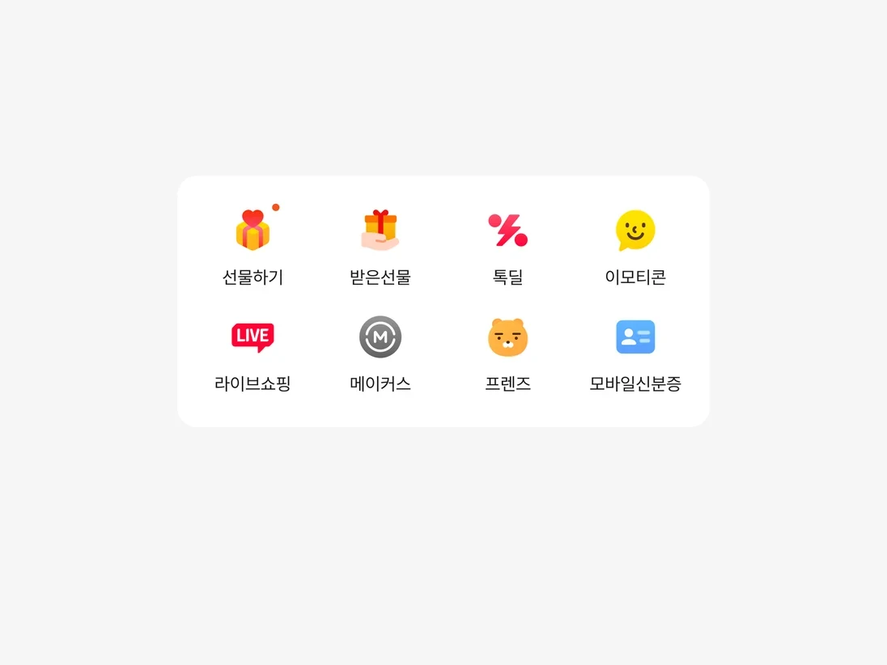
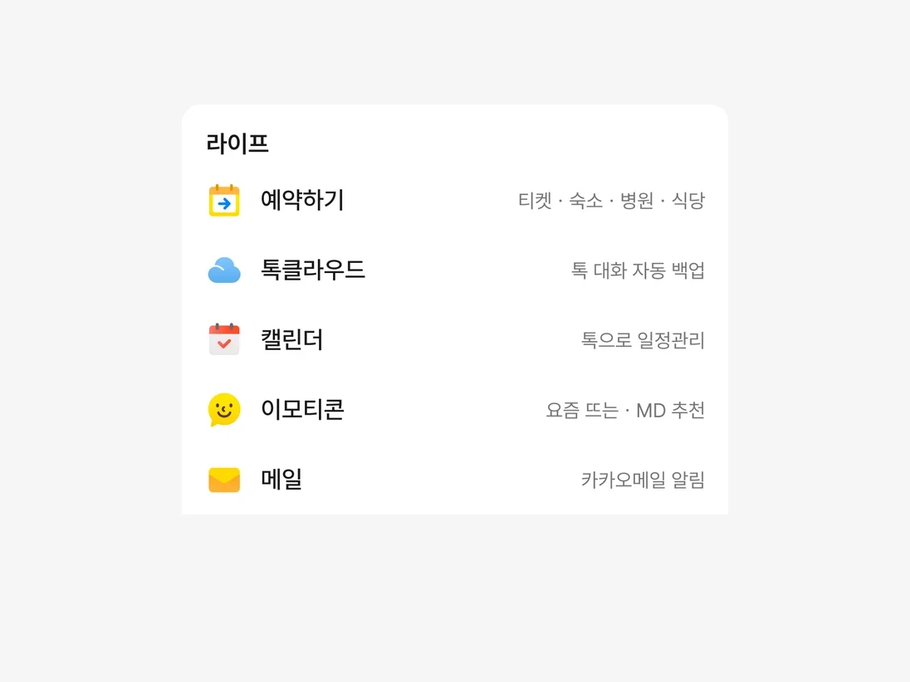
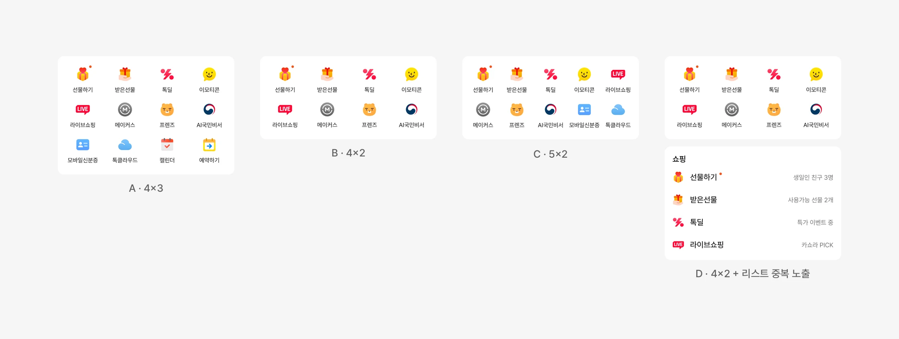
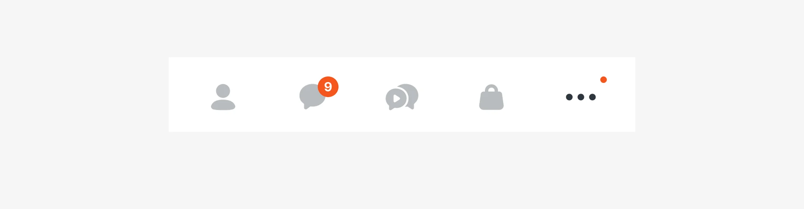

그리드·리스트 혼합 UI 실험
리스트형 탐색은 더 많은 서비스를 보여줬지만, 서비스 클릭은 줄었습니다. 첫 화면의 그리드는 유지하고 그 아래에 카테고리 리스트를 두는 혼합 구조로, 두 방식의 역할을 나눌 수 있는지 실험했습니다.


출발점
리스트로 바꾸자 서비스가 첫 화면에서 내려갔습니다
앞선 리스트형 탐색 실험에서 채택한 카테고리 리스트안은 광고 매출을 늘렸지만, 서비스 클릭은 9% 줄었습니다. 같은 실험에서 선물하기를 리스트 맨 위에 두자 감소 폭이 3분의 1로 줄었습니다. 서비스가 첫 화면의 어디에 놓이는지가 클릭에 영향을 줄 수 있다는 단서였습니다.
그리드에서는 주요 서비스를 첫 화면에 배치할 수 있고, 리스트에서는 더 많은 서비스를 설명과 함께 보여줄 수 있었습니다. 둘 중 하나를 고르는 대신 역할을 나누기로 했습니다. 이 방향으로 직접 테스트하던 혼합안이 다음 실험의 공식 실험안이 됐습니다.


디자인
그리드와 리스트의 역할을 나눴습니다
주요 서비스는 첫 화면의 그리드에 배치하고, 그 아래에는 카테고리별 리스트를 이어 붙였습니다. D안에서는 그리드에 있는 일부 서비스도 리스트에서 다시 찾을 수 있도록 했습니다. 리스트에는 서비스 이름과 함께 한 줄 설명을 붙여, 각 서비스의 용도를 보여줬습니다.

디자인 세부
그리드의 칸 수와 배치만 달리한 네 안을 만들었습니다
그리드의 칸 수와 서비스 배치, 리스트에서의 중복 노출 여부를 달리해 네 가지 안을 디자인했습니다. A는 4×3, B와 D는 4×2, C는 5×2 그리드를 쓰고, D는 그리드의 서비스를 리스트에도 다시 보여줬습니다. 실험안의 아이콘은 디자인 검토를 거쳐 홈 화면 다른 영역과 같은 그래픽 아이콘으로 맞췄습니다.

결과
알림이 켜진 서비스에서 클릭이 줄었습니다
중간 결과에서 서비스 클릭은 네 안 모두 대조군보다 줄었습니다. 커머스 가드레일은 네 안 모두 지켰습니다.
Android의 중간 지표를 살펴보니, 알림이 없는 서비스의 클릭은 모든 실험안에서 증가했습니다. 반면 알림이 표시된 서비스에서는 클릭 감소가 두드러졌습니다. 일별 추이에서도 알림이 많은 날에 감소 폭이 큰 경향을 확인했습니다.
Android에서 나타난 클릭 감소의 원인 후보로 아이콘 표현도 검토하고 있습니다.

발견
하단 탭 알림 점이 표시되지 않는 문제를 찾았습니다
이와 별개로, 일별 실험 결과를 확인하는 과정에서 iOS 일부 버전의 하단 탭에 알림 점이 표시되지 않는 문제를 발견했습니다. 문제를 공유한 뒤 클라이언트 핫픽스가 적용됐고, 실험은 중단 없이 이어졌습니다.


다음 판단
자주 쓰던 서비스로 돌아가는 길을 다시 설계하고 있습니다
중간 결과를 바탕으로, 자주 쓰던 서비스에 다시 접근하기 쉬운 구조를 검토하고 있습니다. 중복 노출안을 기준으로 최근 사용 서비스, 직접 고정하는 서비스, 카테고리 바로가기 등의 보완안을 살펴보고 있습니다.
최종 결과가 확인되면 이를 바탕으로 다음 설계 방향을 정리할 예정입니다.
역할
리드한 것
- 혼합 UI 실험안 디자인
- 실험안 UI·가이드·디자인 QA
- 중간 지표 조회와 이상 징후 확인
- 후속 보완안 설계
함께 한 것
- 실험 조건·판정 지표 — PM, 데이터 분석가
- 통계 검정 — 데이터 분석가
- 알림 표시 문제 수정 — 클라이언트 개발